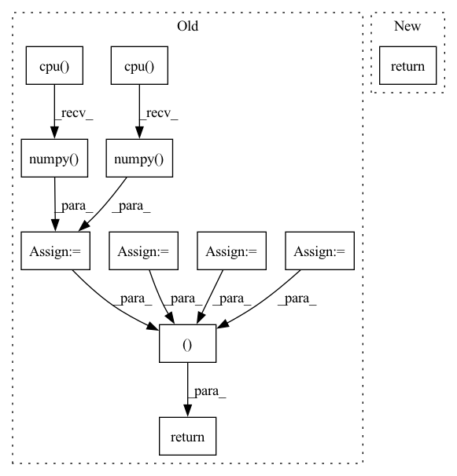

Pattern ID :37485

Before Change
target_wavs, lens = truncate(target_wavs, lens, params.max_length)
target_wavs = target_wavs.to(params.device)
lens = lens.to(params.device)
loss = params.compute_cost(predictions, target_wavs, lens)
stats = {}
if stage != "train":
lens = lens * target_wavs.shape[1]
pesq_scores = multiprocess_evaluation(
predictions.cpu().numpy(),
target_wavs.cpu().numpy(),
lens.cpu().numpy(),
)
stats["pesq"] = pesq_scores
stats["stoi"] = -stoi_loss(predictions, target_wavs, lens)
if stage == "test":
// Write wavs to file
for name, pred_wav, length in zip(ids, predictions, lens):
name += ".wav"
enhance_path = os.path.join(params.enhanced_folder, name)
torchaudio.save(
enhance_path, pred_wav[: int(length)].to("cpu"), 16000
)
return loss, stats
def on_epoch_end(self, epoch, train_stats, valid_stats):
if params.use_tensorboard:
After Change
enhance_path, pred_wav[: int(length)].cpu(), 16000
)
return loss
def on_stage_start(self, stage, epoch=None):
self.loss_metric = MetricStats(metric=self.hparams.compute_cost)
In pattern: SUPERPATTERN
Frequency: 3
Non-data size: 11
Instances
Fragment ID: 108001645
Project Name: speechbrain/speechbrain
Commit Name: 12938c3385685062c6f084d917abef54fac489a3
Time: 2020-10-26
Author: weisberger2009@gmail.com
File Name: recipes/Voicebank/enhance/waveform_map/experiment.py
M Class Name: SEBrain
N Class Name: SEBrain
M Method Name: compute_objectives(4)
N Method Name: compute_objectives(4)
M Parent Class: sb.Brain
N Parent Class: sb.core.Brain
M File Name: recipes/Voicebank/enhance/waveform_map/experiment.py
N File Name: recipes/Voicebank/enhance/waveform_map/experiment.py
M Start Line: 70
M End Line: 95
N Start Line: 24
N End Line: 54
'>
Before Change
score_of_positive = kg_embedding_model.predict(pos_triple)
scores_subject_based = np.append(arr=scores_of_corrupted_subjects, values=score_of_positive)
indice_of_pos_subject_based = scores_subject_based.size - 1
scores_object_based = np.append(arr=scores_of_corrupted_objects, values=score_of_positive)
indice_of_pos_object_based = scores_object_based.size - 1
_, sorted_score_indices_subject_based = torch.sort(torch.tensor(scores_subject_based, dtype=torch.float),
descending=self.kge_to_descend_sorting[
kg_embedding_model.model_name])
sorted_score_indices_subject_based = sorted_score_indices_subject_based.cpu().numpy()
_, sorted_score_indices_object_based = torch.sort(torch.tensor(scores_object_based, dtype=torch.float),
descending=self.kge_to_descend_sorting[
kg_embedding_model.model_name])
sorted_score_indices_object_based = sorted_score_indices_object_based.cpu().numpy()
// Get index of first occurrence that fulfills the condition
rank_of_positive_subject_based = np.where(sorted_score_indices_subject_based == indice_of_pos_subject_based)[0][
0]
rank_of_positive_object_based = np.where(sorted_score_indices_object_based == indice_of_pos_object_based)[0][0]
return (
rank_of_positive_subject_based,
rank_of_positive_object_based,
)
def evaluate(self, test_triples: np.ndarray):
After Change
rank_of_positive_object_based = scores_of_corrupted_objects.shape[0] - \
np.greater(scores_of_corrupted_objects, score_of_positive).sum()
return (
rank_of_positive_subject_based + 1,
rank_of_positive_object_based + 1,
)
'>
Fragment ID: 108001662
Project Name: pykeen/pykeen
Commit Name: d0af5f9478b457b561f9e88d53fbe9a18f1c2672
Time: 2019-05-15
Author: lvermue@users.noreply.github.com
File Name: src/poem/evaluation/ranked_based_evaluator.py
M Class Name: RankBasedEvaluator
N Class Name: RankBasedEvaluator
M Method Name: _compute_rank(6)
N Method Name: _compute_rank(6)
M Parent Class: AbstractEvalutor
N Parent Class: AbstractEvalutor
M File Name: src/poem/evaluation/ranked_based_evaluator.py
N File Name: src/poem/evaluation/ranked_based_evaluator.py
M Start Line: 146
M End Line: 176
N Start Line: 143
N End Line: 157
'>
Before Change
This is a real metric. The binary images can therefore be supplied in any order.
// result_array = reverse_one_hot(inp, params["model"]["class_list"])
result_array = inp.cpu().detach().numpy()
// ensure that we are dealing with a binary array
result_array[result_array < 0.5] = 0
result_array[result_array >= 0.5] = 1
reference_array = (
one_hot(target, params["model"]["class_list"])
.squeeze(-1)
.cpu()
.detach()
.numpy()
)
hd1 = __surface_distances(result_array, reference_array, params["subject_spacing"])
hd2 = __surface_distances(reference_array, result_array, params["subject_spacing"])
hd_95 = numpy.percentile(numpy.hstack((hd1, hd2)), 95)
return torch.tensor(hd_95)
def fetch_metric(metric_name):
After Change
def hd95(inp, target, params):
return hd_generic(inp, target, params, 95)
def hd100(inp, target, params):
'>
Fragment ID: 108001611
Project Name: cbica/gandlf
Commit Name: e3702eee18d001070833d88572656d18921f3a20
Time: 2021-06-26
Author: sarthak.pati@hotmail.com
File Name: GANDLF/metrics.py
M Class Name: AnonimousClass
N Class Name: AnonimousClass
M Method Name: hd95(3)
N Method Name: hd95(3)
M Parent Class:
N Parent Class:
M File Name: GANDLF/metrics.py
N File Name: GANDLF/metrics.py
M Start Line: 225
M End Line: 240
N Start Line: 244
N End Line: 244